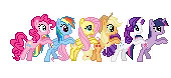

Pony Tower Defense

Добро пожаловать в Понивилль! Наши мирные земли столкнулись с невиданной угрозой. Из вечнозеленого леса начали выходить странные тени, а старые противники объединились, чтобы нарушить гармонию Эквестрии. Только вы можете помочь шестерке главных героинь организовать оборону.
Эта игра представляет собой классическую стратегию в жанре Tower Defense. Вам предстоит расставлять пони на стратегических позициях вдоль дороги, чтобы сдерживать наступающие волны противников. Каждая пони обладает своим характером, который напрямую отражается на её боевом стиле.
За каждого побежденного врага вы получаете золотые монеты. Эти ресурсы крайне важны: на них вы можете приглашать новых друзей в свою команду обороны. Умное планирование бюджета — это половина успеха в защите наших границ.
Магия дружбы здесь играет ключевую роль. Некоторые пони, такие как Флаттершай, не атакуют врагов напрямую, но помогают остальным, замедляя неприятелей своим добрым взглядом. Другие же, как Радуга Дэш, постоянно патрулируют небо, нанося урон всем, кто окажется под её крыльями.
Приготовьтесь к испытаниям! Впереди вас ждут битвы с могущественными боссами, такими как Трикси и Королева Кризалис. Изучайте тактику в нашей энциклопедии, проходите уровни и помните: пока мы едины — Понивилль в безопасности!
Как подготовиться к обороне?
Прежде чем нажать кнопку старта, каждый защитник Эквестрии должен выполнить следующие шаги:
- Изучить ландшафт и найти самые крутые повороты дороги.
- Проверить текущий бюджет и выбрать первую пони для установки.
- Разместить Флаттершай в стратегически важном месте для замедления.
- Оставить запас золота на случай внезапного появления босса.
- Нажать на кнопку вызова волны и приготовиться к битве!